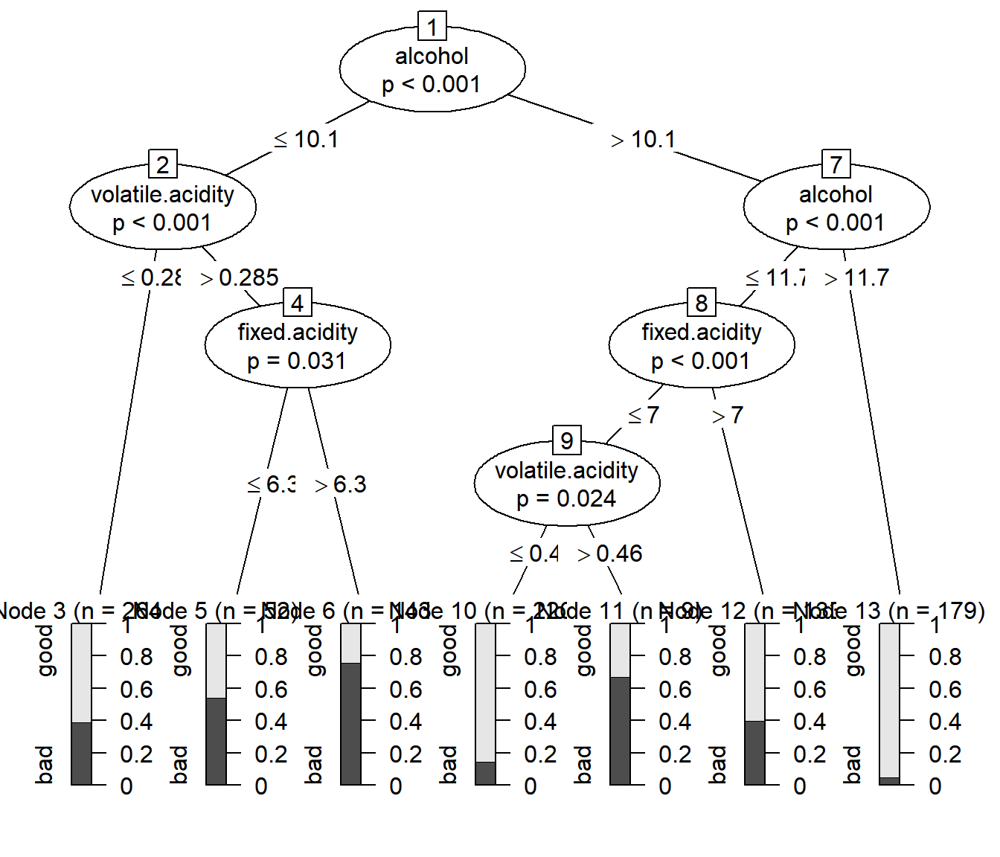

2.4 Alternativas a los árboles CART
Una de las alternativas más populares es la metodología C4.5 (Quinlan, 1993), evolución de ID3 (1986), que en estos momentos se encuentra en la versión C5.0 (y es ya muy similar a CART). C5.0 se utiliza sólo para clasificación e incorpora boosting (que veremos en el tema siguiente). Esta metodología está implementada en el paquete C50.
Ross Quinlan desarrolló también la metodologia M5 (Quinlan, 1992) para regresión. Su principal característica es que los nodos terminales, en lugar de contener un número, contienen un modelo (de regresión) lineal. El paquete Cubist es una evolución de M5 que incorpora un método ensemble similar a boosting.
La motivación detrás de M5 es que, si la predicción que aporta un nodo terminal se limita a un único número (como hace la metodología CART), entonces el modelo va a predecir muy mal los valores que realmente son muy extremos, ya que el número de posibles valores predichos está limitado por el número de nodos terminales, y en cada uno de ellos se utiliza una media. Por ello M5 le asocia a cada nodo un modelo de regresión lineal, para cuyo ajuste se utilizan los datos del nodo y todas las variables que están en la ruta del nodo. Para evaluar los posibles cortes que conducen al siguiente nodo, se utilizan los propios modelos lineales para calcular la medida del error.
Una vez se ha construido todo el árbol, para realizar la predicción se puede utilizar el modelo lineal que está en el nodo terminal correspondiente, pero funciona mejor si se utiliza una combinación lineal del modelo del nodo terminal y de todos sus nodos ascendientes (es decir, los que están en su camino).
Otra opción es CHAID (CHi-squared Automated Interaction Detection, Kass, 1980), que se basa en una idea diferente. Es un método de construcción de árboles de clasificación que se utiliza cuando las variables predictoras son cualitativas o discretas; en caso contrario deben ser categorizadas previamente. Y se basa en el contraste chi-cuadrado de independencia para tablas de contingencia.
Para cada par \((X_i, Y)\), se considera su tabla de contingencia y se calcula el p-valor del contraste chi-cuadrado, seleccionándose la variable predictora que tenga un p-valor más pequeño, ya que se asume que las variables predictoreas más relacionadas con la respuesta \(Y\) son las que van a tener p-valores más pequeños y darán lugar a mejores predicciones. Se divide el nodo de acuerdo con los distintos valores de la variable predictora seleccionada, y se repite el proceso mientras haya variables significativas. Como el método exige que el p-valor sea menor que 0.05 (o el nivel de significación que se elija), y hay que hacer muchas comparaciones es necesario aplicar una corrección para comparaciones múltiples, por ejemplo la de Bonferroni.
Lo que acabamos de explicar daría lugar a árboles no necesariamente binarios. Como se desea trabajar con árboles binarios (si se admite que de un nodo salga cualquier número de ramas, con muy pocos niveles de profundidad del árbol ya nos quedaríamos sin datos), es necesario hacer algo más: forzar a que las variables predictoras tengan sólo dos categorías mediante un proceso de fusión. Se van haciendo pruebas chi-cuadrado entre pares de categorías y la variable respuesta, y se fusiona el par con el p-valor más alto, ya que se trata de fusionar las categorías que sean más similares.
Para árboles de regresión hay metodologías que, al igual que CHAID, se basan en el cálculo de p-valores, en este caso de contrastes de igualdes de medias. Una de las más utilizadas son los conditional inference trees (Hothorn et al., 2006)12, implementada en la función ctree() del paquete party.
Un problema conocido de los árboles CART es que sufren un sesgo de selección de variables: los predictores con más valores distintos son favorecidos. Esta es una de las motivaciones de utilizar estos métodos basados en contrastes de hipótesis. Por otra parte hay que ser conscientes de que los contrastes de hipótesis y la calidad predictiva son cosas distintas.
2.4.1 Ejemplo
library(party)
tree2 <- ctree(taste ~ ., data = train)
plot(tree2)
Otra alternativa es GUIDE (Generalized, Unbiased, Interaction Detection and Estimation; Loh, 2002).↩